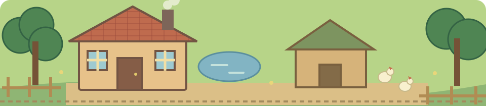

把日子种进土里 09
四季小院
从几块田、一包种子开始，经营属于你的农场。

🌱 四季种植🐓 鸡舍养殖🏡 持续经营☁ 账号云存档
游戏日通过农舍睡觉推进。退出后进度保留，离线期间不会推进游戏日。
回到你的农场
账号忽略字母大小写。注册后请保存账号和恢复码，可用于找回密码。每次找回后会生成新的恢复码。存档需要连接云端。当前使用 Cloudflare，部分大陆网络可能访问超时。
属于你的四季小院
我的农场
云存档
金币
从几块田、一包种子开始，经营属于你的农场。

游戏日通过农舍睡觉推进。退出后进度保留，离线期间不会推进游戏日。
账号忽略字母大小写。注册后请保存账号和恢复码，可用于找回密码。每次找回后会生成新的恢复码。存档需要连接云端。当前使用 Cloudflare，部分大陆网络可能访问超时。